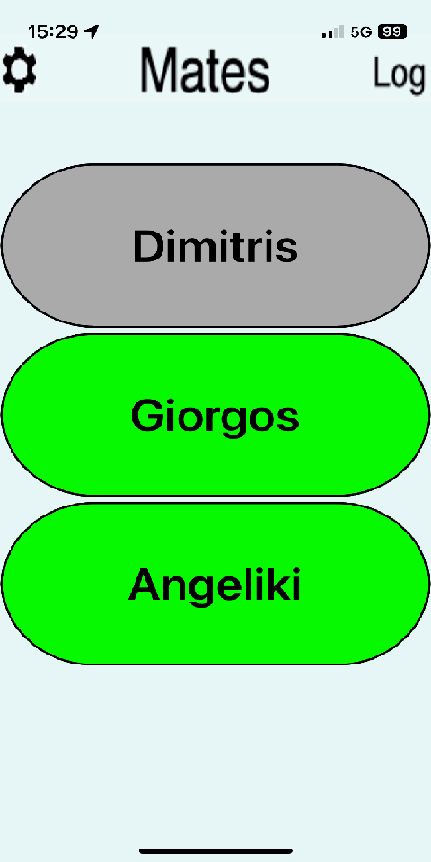
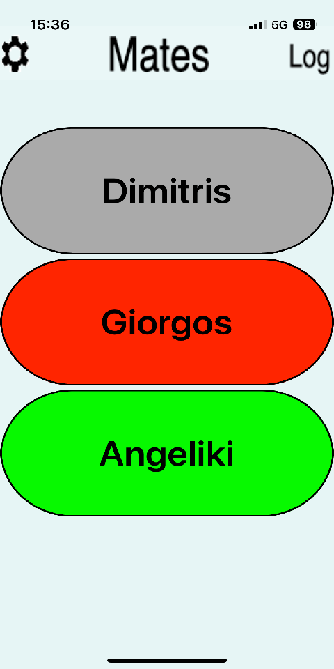
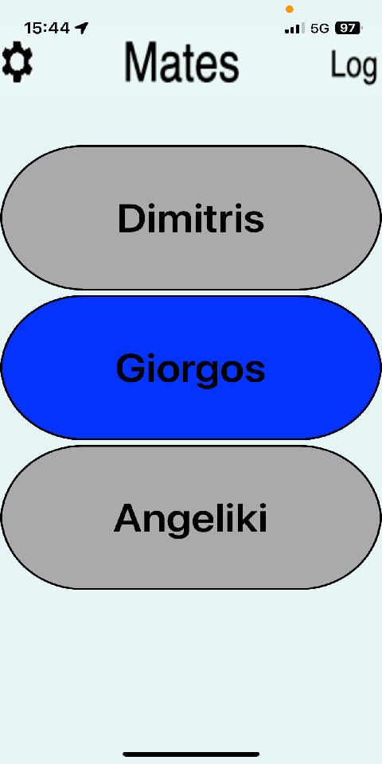
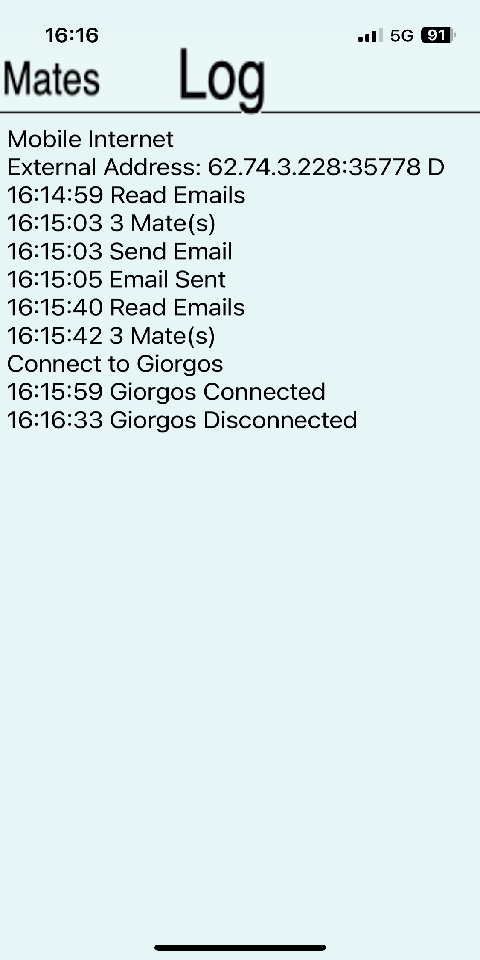

Μόλις εγκατασταθεί για πρώτη φορά, η εφαρμογή ζητά την συγκατάθεση του χρήστη για να χρησιμοποιήσει τον λογαριασμό ηλεκτρονικού ταχυδρομείου όπου θα στέλνει τα μηνύματά της και θα διαβάζει τα μηνύματα των άλλων χρηστών.
Πατώντας το Accept, μεταφερόμαστε στα Settings όπου έχουμε τρία πεδία για να συμπληρώσουμε. Το πρώτο είναι το όνομα με το οποίο θα μας ξέρουν οι άλλοι χρήστες. Τα άλλα δύο πεδία είναι το Username και το Password του λογαριασμού. Για τη δοκιμή αυτά είναι προσυμπληρωμένα με τον δοκιμαστικό λογαριασμό, αλλά κάποια στιγμή θα πρέπει να αλλαχτούν με τα σωστά. Πατάμε το Save και τα αποθηκεύουμε.
Δίνουμε επίσης συγκατάθεση για την χρήση του μικροφώνου. Εδώ τελειώνει η εγκατάσταση.
Στην κανονική λειτουργία της εφαρμογής, βλέπουμε στη αρχή με αχνό γκρι τους άλλους χρήστες που υπήρχαν την τελευταία φορά που είχε λειτουργήσει η εφαρμογή. Την πρώτη φορά, εφόσον δεν υπάρχει προηγούμενη, δεν βλέπουμε κανέναν εδώ. Μόλις βρεθούν μηνύματα από άλλους χρήστες, εμφανίζονται τα ονόματά τους με σκούρο γκρι χρώμα. Τώρα η εφαρμογή προσπαθεί να έλθει σε επαφή μαζί τους. Αυτή η δουλειά γίνεται κάθε ένα λεπτό. Δηλαδή η εφαρμογή ψάχνει στα email εάν έγινε κάποια αλλαγή στους χρήστες και προσπαθεί να έλθει σε επαφή μαζί τους. Τη ώρα που ψάχνει τα email, τα κουμπιά γίνονται αχνά γκρι και μετά επανέρχονται στο σκούρο γκρι.
Μπορούμε με σκούπισμα αριστερά να δούμε τα Logs και με σκούπισμα δεξιά να δούμε τα Settings.
Όταν επιτύχει η επαφή με κάποιον, σημαίνει ότι η εφαρμογή του "τρέχει", οπότε τα ονόματα των δύο γίνονται πράσινα και χτυπά ένα καμπανάκι. Όποιος από τους δύο θέλει, πατάει το πράσινο κουμπί του, οπότε τα ονόματα αντίστοιχα και των δύο γίνονται κόκκινα και ο άλλος ειδοποιείται με ένα σφύριγμα ότι έχει κληθεί. Εάν εκείνος ανταποκριθεί στην πρόσκληση πατώντας το κόκκινο κουμπί, τα δύο ονόματα γίνονται μπλέ και ανοίγει η επικοινωνία μεταξύ τους.
Αυτό είναι όλο: Γκρι - Πράσινο - Κόκκινο - Μπλε.
   